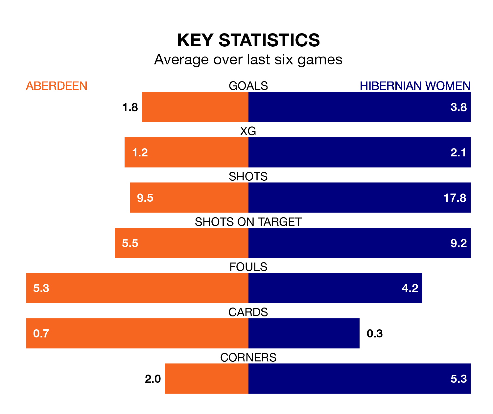

Hibernian Women travel to Aberdeen on early Saturday in SWPL 1.
The visitors come into the game on the back of a defeat in their last match, having lost to Glasgow City Women 3-1 at home, with a goal from Leah Eddie.
Aberdeen, meanwhile, drew their last match, 1-1 against Hamilton Academical, with their goal scored by Chloe Gover.
With 26 goals in 15 games so far this season, Aberdeen are scoring at below the league average rate with 1.7 goals per game. And they are conceding more than average, letting in 45 goals at a rate of 3.0 per game.
Hibernian, meanwhile, are above average scorers, with 2.5 goals per game, compared to a league average of 2.2. They have conceded 1.7 goals per game.
With Katie Fraine between the sticks, Hibs can rely on one of the league's safest pair of hands. She has kept five clean sheets in her 13 appearances this season, and only two other 'keepers – Celtic Women's Kelsey Daugherty and Rangers Women's Jenna Fife – have been able to prevent the opposition scoring on more occasions in SWPL 1.
In the home team's net, Faye Mary Kirby has two clean sheets in seven games. She has conceded a goal every 55 minutes, 10% more often than the 62 minutes between goals for Fraine.
Aberdeen are in mixed form in SWPL 1, with two wins and a draw from their last six games.
With four wins and two losses over that period, the visitors' form is better – they have taken 12 points from 18, compared to Aberdeen's seven.
Over the last two years, Aberdeen and Hibernian have played each other on six occasions. Aberdeen won one of them, Hibernian four, and they drew once.
On average, Aberdeen scored 0.8 goals and Hibs 3.0 in those matches.
Their last meeting was on October 1, when Hibernian won 6-2 at home.
The hosts are seventh in the table after 15 games, of which they have won six and drawn one, earning 19 points.
Hibernian are one place ahead of Aberdeen in sixth, with eight wins and two draws putting them on 26 points.
